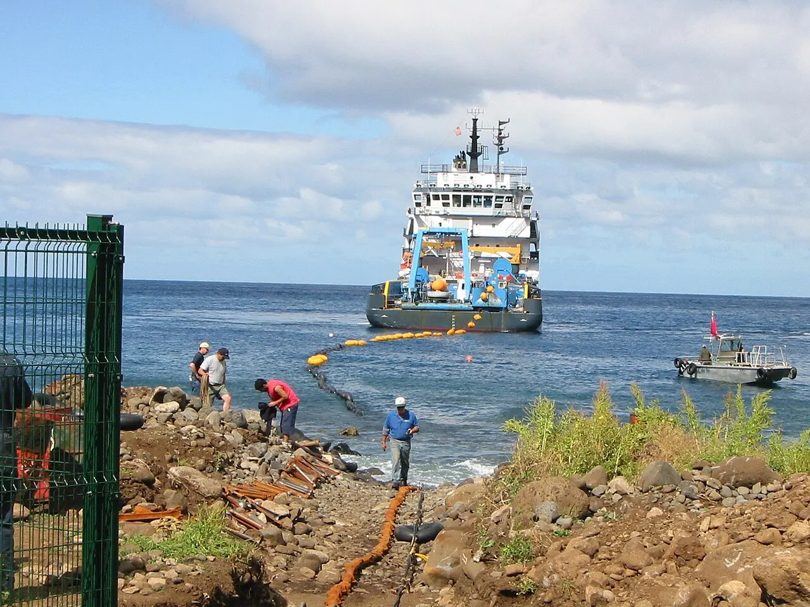

해협은 데이터도 지나갑니다

호르무즈 해협을 이야기할 때 대부분은 원유와 가스 운송을 먼저 떠올립니다. 그러나 현대 경제에서 좁은 해역은 데이터 이동의 길목이기도 합니다. 금융 주문, 클라우드 서비스, 기업 업무, 통신 트래픽은 해저 케이블을 통해 대륙 사이를 오갑니다. 에너지 시장의 긴장이 커지면 통신 인프라의 취약성도 함께 주목받습니다.
해저 케이블은 바닷속에 묻혀 있어 눈에 잘 보이지 않습니다. 하지만 장애가 생기면 서비스 지연, 우회 비용, 복구 지연이 바로 나타납니다. 특정 지역에 트래픽이 몰린 상태에서 지정학적 긴장이 커지면 기업은 대체 경로와 백업 회선을 점검하게 됩니다. 데이터도 물류처럼 길이 막히면 비용이 늘어납니다.
호르무즈 주변 리스크의 핵심은 실제 절단 여부만이 아닙니다. 보험료, 선박 접근, 수리 가능성, 해상 보안 비용이 먼저 움직입니다. 위험이 커지면 수리선 투입이 어려워지고, 그 가능성만으로도 기업은 더 비싼 우회 노선을 선택할 수 있습니다.
클라우드는 지연에 민감합니다
클라우드 서비스는 멀리 있는 데이터센터를 가까운 것처럼 쓰게 만드는 산업입니다. 이 착시는 안정적인 네트워크가 있을 때만 유지됩니다. 국제 회선이 우회하면 지연 시간이 늘고, 화상회의와 게임, 금융 거래, 원격 업무 품질이 달라집니다. 대형 기업은 여러 리전을 쓰지만 작은 기업은 선택지가 좁습니다.
금융기관은 특히 민감합니다. 거래 지연과 데이터 동기화 문제는 비용으로 이어집니다. 은행과 거래소, 결제 기업은 회선 장애 자체보다 장애가 났을 때 어느 서비스부터 줄일지, 어떤 데이터가 먼저 복구돼야 하는지 계획을 세웁니다. 해저 케이블 리스크는 정보기술 부서만의 문제가 아닙니다.
국가별 데이터 주권 요구도 변수입니다. 어떤 데이터는 특정 지역 밖으로 나가면 안 되고, 어떤 서비스는 가까운 리전에서 처리해야 합니다. 우회 경로가 생겨도 규제 때문에 자유롭게 돌리지 못할 수 있습니다. 그래서 기술적 백업과 법적 허용 범위를 함께 봐야 합니다.
보험료가 먼저 말합니다
지정학적 위험은 가격표보다 보험료에 먼저 나타나는 경우가 많습니다. 선박과 해양 공사, 케이블 수리, 통신 설비 운영 비용이 올라가면 신규 프로젝트의 경제성이 바뀝니다. 긴장이 오래가면 계획된 케이블 노선이 지연되거나 다른 지역으로 우회할 수 있습니다.
보안 비용도 늘어납니다. 케이블 육양국은 물리적 보안과 사이버 보안을 모두 요구합니다. 해상 감시, 접근 통제, 장비 이중화, 비상 전원까지 확인해야 합니다. 기업은 네트워크 비용을 단순한 통신료로 보지 않고 운영 지속성 비용으로 보기 시작합니다.
이런 변화는 에너지 기업뿐 아니라 클라우드, 통신, 금융, 해운, 보험 회사의 실적에 퍼집니다. 호르무즈 위험을 볼 때 원유 가격만 보면 데이터 인프라 쪽의 느린 비용 상승을 놓칠 수 있습니다.
우회망은 하루에 생기지 않습니다
정부와 기업은 위험 지역을 피하는 새로운 노선을 원하지만 해저 케이블은 빠르게 놓을 수 없습니다. 해양 조사, 허가, 장비 조달, 포설선 일정, 육상 연결 공사가 필요합니다. 긴장이 커진 뒤에야 백업망을 만들기 시작하면 이미 늦습니다.
따라서 중요한 것은 평시에 중복성과 복구 계획을 얼마나 갖췄는지입니다. 여러 노선이 서로 다른 해역을 지나고, 데이터센터 리전이 분산돼 있으며, 중요한 서비스가 우선 복구되는 구조가 있어야 합니다. 외교와 통신 정책은 여기서 만납니다.
호르무즈 리스크는 에너지 안보를 넘어 데이터 안보의 문제로 확장되고 있습니다. 해저 케이블은 세계 경제의 조용한 기반이고, 그 기반이 흔들릴 때 비용은 여러 산업에 작게 쪼개져 나타납니다.
관련 영상
이란이 꺼낸 해저 케이블 카드, 또 다른 변수가 될까
중동 긴장을 볼 때 유가만 확인하면 절반만 보는 셈입니다. 데이터가 어느 길로 흐르고, 그 길이 끊겼을 때 어디로 돌아가는지까지 봐야 합니다. 해저 케이블 리스크는 조용하지만 한 번 드러나면 클라우드와 금융, 통신 비용을 동시에 움직입니다.
호르무즈 해저 케이블 리스크는 석유보다 데이터 이동을 먼저 흔듭니다을 볼 때는 발표 직후의 반응보다 다음 분기까지 이어지는 숫자를 함께 확인하는 편이 좋습니다. 단기 뉴스는 방향을 빠르게 바꾸지만 실제 변화는 계약, 예산, 생산, 소비 습관처럼 느린 항목에서 굳어집니다. 이 차이를 나누어 보면 과장된 기대와 실제 지속 가능성을 구분할 수 있습니다.
가장 실용적인 점검 방법은 한 가지 지표에 기대지 않는 것입니다. 가격, 수요, 비용, 규제, 실행 시간이 같은 방향으로 움직이는지 확인해야 합니다. 어느 하나만 좋아도 나머지가 따라오지 않으면 결과는 늦어지고, 여러 조건이 동시에 맞으면 변화는 예상보다 빠르게 확산될 수 있습니다.
이 주제는 한 번의 결론보다 관찰 순서가 더 중요합니다. 먼저 현재 병목을 확인하고, 그다음 누가 비용을 부담하는지 보며, 마지막으로 그 부담이 가격이나 행동 변화로 이어지는지 봐야 합니다. 그렇게 읽으면 제목보다 구조가 먼저 보입니다.
호르무즈 해저 케이블 리스크는 석유보다 데이터 이동을 먼저 흔듭니다을 볼 때는 발표 직후의 반응보다 다음 분기까지 이어지는 숫자를 함께 확인하는 편이 좋습니다. 단기 뉴스는 방향을 빠르게 바꾸지만 실제 변화는 계약, 예산, 생산, 소비 습관처럼 느린 항목에서 굳어집니다. 이 차이를 나누어 보면 과장된 기대와 실제 지속 가능성을 구분할 수 있습니다.
가장 실용적인 점검 방법은 한 가지 지표에 기대지 않는 것입니다. 가격, 수요, 비용, 규제, 실행 시간이 같은 방향으로 움직이는지 확인해야 합니다. 어느 하나만 좋아도 나머지가 따라오지 않으면 결과는 늦어지고, 여러 조건이 동시에 맞으면 변화는 예상보다 빠르게 확산될 수 있습니다.
이 주제는 한 번의 결론보다 관찰 순서가 더 중요합니다. 먼저 현재 병목을 확인하고, 그다음 누가 비용을 부담하는지 보며, 마지막으로 그 부담이 가격이나 행동 변화로 이어지는지 봐야 합니다. 그렇게 읽으면 제목보다 구조가 먼저 보입니다.
호르무즈 해저 케이블 리스크는 석유보다 데이터 이동을 먼저 흔듭니다을 볼 때는 발표 직후의 반응보다 다음 분기까지 이어지는 숫자를 함께 확인하는 편이 좋습니다. 단기 뉴스는 방향을 빠르게 바꾸지만 실제 변화는 계약, 예산, 생산, 소비 습관처럼 느린 항목에서 굳어집니다. 이 차이를 나누어 보면 과장된 기대와 실제 지속 가능성을 구분할 수 있습니다.